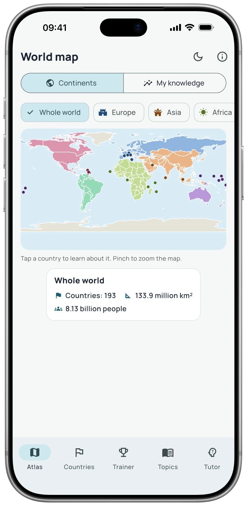

Meet every country
Tap the interactive atlas for flags, capitals, area, population, currencies and languages. Zoom in and find the details.
The world is full of good questions
Make the world feel familiar.
Explore the atlas, learn flags and capitals, and turn “somewhere over there” into a place you know.
Free download · optional Pro features


App screenshot
Why you’ll love it
Tap the interactive atlas for flags, capitals, area, population, currencies and languages. Zoom in and find the details.
Practise flags, capitals and outlines, or race the clock to find a country on the map. Review brings countries back when you need it.
Read physical and human geography. Pro adds country comparison, unlimited training and a map of your growing mastery.
Take a look
Real screens. A better feel for what’s inside.


FAQ
Answers before you get started.
Yes. The handbook and its reference content are available offline after installation. Apple Intelligence features also require a compatible device and a downloaded system model.
You can download the app for free. The reference handbook stays useful without Pro; additional learning tools and AI features depend on the app’s Pro plan. The App Store and the in-app purchase screen show the current options.
No. You can read and use the handbook without it. The AI tutor is optional and requires a compatible iPhone or iPad with Apple Intelligence enabled; supported languages depend on your system.
The app is available for iPhone and iPad. Check the App Store page for the current operating system and device requirements.
Free download · optional Pro features
AI tutoring is a Pro feature. It needs a compatible iPhone or iPad, iOS/iPadOS 26 or later, and enabled Apple Intelligence. Availability varies by language and region. AI answers can contain mistakes.